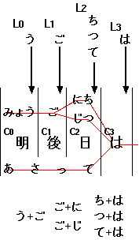
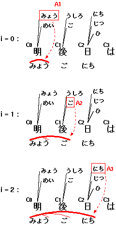

本記事では視覚障害者の利用を想定した、 漢字をふくむ日本語文字列を読みがなだけで検索するシステムを提案する。 本手法は bi-gram と動的計画法をもちいて、漢字を含む文字列を すべての可能な読み方で効率的にインデックス、および検索することを可能にする。 試験的な実装により、本手法が大規模な文書検索に応用可能であること、 また純粋な読みがなだけの検索では不十分な場合があることを示す。
現在の視覚障害者は、おもに点字ディスプレイまたは 音声合成をもちいた画面読み上げソフトウェア (スクリーンリーダ) を用いて コンピュータにアクセスしている。しかし現在普及している点字は ほとんどが表音文字であり (注: 点字をもちいて漢字を表現する 6点漢字あるいは 8点漢字という手法も提案されているが、 広く普及するには至っていない)、 画面読み上げソフトウェアもまた音声に頼っていることから、 視覚障害者が日本語の漢字表記に触れる機会は晴眼者に比べて少ない。 このことは、コンピュータを使って大規模な文書検索をおこなうさいに 問題となる。現在普及している、文字列一致による検索システムでは ユーザは検索したい単語がどのような綴りなのか、あるいはそもそもそれが漢字 (あるいはカタカナ) によって表現されているのかどうかを あらかじめ知っている必要がある。 さらに複数の単語からなる文や句全体を検索する際には、 ユーザはそれが (一般的な かな漢字変換ソフトウェアを用いて) どのように 漢字に変換されるかもある程度予測できていなければならない。 このようなことは、漢字表記を普段からあまり意識していない 視覚障害のユーザーにとって困難である。高齢の視覚障害者の場合、 ユーザは漢字をほとんど知らないこともある。そこで、 本記事では漢字 (あるいはカタカナ) を含む文字列の「読み」だけで 大規模な文書集合を効率よく検索できるような機構を提案する。
検索システムを設計する立場から考えると、この問題は検索対象となる
文字列に含まれる漢字すべてに正しい読み方を付与すれば解決できるように思われる。
しかし、すべての漢字、とりわけ日本語の固有名詞に対して
一意の読み方を付与することは難しい。固有名詞は同じ漢字表記であっても
さまざまな読み方が存在し、適切な文脈情報なしには読みを決定することは
不可能である。たとえば「新山」という文字列には、
「にいやま」「しんやま」「しんざん」などの可能な読み方が存在する。
また、たとえ正しい読みが付与できたとしても、ユーザがその読み方を
知らないこともありうる。なぜなら一般的な音声合成技術を使っている
現在のスクリーンリーダは、まさに上で示した理由により、固有名詞を正しく
発音しない場合が多いからである。
そこで本記事で提案する検索システムでは、ある漢字かな混じり文字列を
可能なすべての読みで検索できるようにすることを目標とする。
しかし、伝統的な手法を用いてこのような検索を実現しようとすると
計算量およびデータ量の増大という問題が発生する。
たとえば「日本の祭事」という文字列を考えてみよう。
「日本」という文字列は「にほん」とも「にっぽん」とも読めるし、
また「祭事」は、「さいじ」あるいは「まつりごと」とも読めるので、
少なくとも「日本の祭事」に対しては「にほんのさいじ」「にっぽんのさいじ」
「にほんのまつりごと」「にっぽんのまつりごと」の 4種類の読み方が存在する。
このような読み方をすべて列挙すると、一般的に可能性のある読み方は
連続する漢字の数に応じて指数的に増えてしまう。
本記事では、2-グラム (bi-gram) と動的計画法 (dynamic programming) を もちいて、これらの可能な読みをすべて現実的な計算時間で処理する 手法を提案する。また、この機構を既存のオープンソース 検索システムである Fooling に実装し、簡単な性能評価をおこなった。 本手法は、文書をすべてひらがな (あるいはカタカナ) による 読みで検索するが、オプションとしてローマ字入力による検索も可能である。 したがって、この手法は将来的に文字入力のためのキーが限られている 携帯デバイスなどからの文書検索システムにも応用できるかもしれない。
本システムでは、文字列の検索は 2つの段階に分けられる。 ひとつは、検索の絞りこみのためのデータ構造 (インデックス、index) を 検索対象となる文書集合からあらかじめ作成しておく「インデクシング」であり、 もうひとつは実際に与えられた検索要求 (読みがな) に 適合する文書を抽出する「検索処理」である。後述するように、 本システムでは検索処理はさらに 2つの段階 (「絞りこみ」と「マッチング」) に分けられる。
一般的な文書検索システムにおいては、インデックスは
ユーザが入力する各検索語をふくんだ文書集合を対応づける写像に
なっている。インデックスは、すべての可能な検索キーワードに対して、
それらが含まれる文書の集合を対応づけるような写像であるが、
返される文書が必ずしもすべて検索結果に完全に一致する必要はない。
インデックスは検索要求に一致する可能性が (他の文書に比べて)
十分に高いようなものを、適当な数にまで絞りこむために使われる。
本システムはこのアイデアにもとづき、インデックスのキーとして
読みがなの bi-gram を使う。読みがなの bi-gram とは、日本語の
読みがなのうち連続する 2文字をそれぞれ取り出したものである。
たとえば「明後日」という文字列に対応する読みがなは、
「あさって」であるが、これは
「あさ」「さっ」「って」という 3つの bi-gram に分解できる。
本システムでは、このような読みがなの対応は辞書ファイルによって与えられる。
なお、実際には本システムではインデックスする単位は文書ではなく、各文書中の
文である。システムはインデックスする文書を個々の文に分解し、
これらの文から bi-gram を取得してインデックスする。
したがって、実際のインデックスには、
「あさ」が含まれるすべての文、
「さっ」が含まれるすべての文、
そして「って」が含まれるすべての文が、
それぞれの bi-gram に対応づけられて格納されている
(注: 実際に格納されているのは文章の文字列そのものではなく、
各文章への参照である)。
例として、「あさっては」という読みが含まれる文:
明後日は試合だ。」
を検索することを考えてみよう。 システムはまずこの文を読みがなの bi-gram 列に分解し、 インデックスしておく。とりあえず、システムは
明後日」→「あさって」、
「試合」→「しあい」
のような単語と読みの対応関係を記述した辞書をもっていると仮定する。 この場合、システムは次のような bi-gram 列を得ることになる:
あさ」
「さっ」
「って」
「ては」
「はし」
「しあ」
「あい」
「いだ」
システムはこれらの bi-gram からこの文への写像をインデックスに格納する。
このあとユーザが「あさっては」という検索要求 (読みがな) により
検索をおこなったとすると、システムはまずこの検索語を 3つの bi-gram
「あさ」「さっ」「って」「ては」に
変換する。つぎにインデックスを参照し、
これら 3つの bi-gram すべてが含まれているような文をとりだす。
この操作を「絞りこみ (narrowing)」と呼ぶことにしよう。
各 bi-gram x に対応する文の集合を S(x) とすると、
これは以下のような集合演算によって計算できる:
あさ") ∩ S("さっ") ∩ S("って") ∩ S("ては")
しかし、これだけでは検索結果としては十分ではない。 もしインデックスに以下のような文章も登録されていたとすると:
浅間山がさっき煙を吹いたってハロルド君が言ってたよ。」
ここにも
「あさ」「さっ」「って」「ては」
という bi-gram が現れるからである。
そのためインデックスから返された文集合に対して、
さらなる検査をおこなう必要がある。
しかし重要なことは、このような文はそれほど多くないということである。
したがってインデックスから得られた文に逐次検索をおこなっても、
それらの中には検索要求に実際に一致する可能性が高いものが多く含まれている。
このように、インデックスを使うことにより、検索対象となる文を
絞りこむことができる。
(注: ここで読者は、連続した箇所に表われる bi-gram のみを
対象にすればさらに対象となる文が絞りこめると考えるかもしれない。
しかし、実際には「明後日」という単語は
「みょうごにち」とも読めるため、実は
本システムではこれらの読みがなに対応する bi-gram 列
「みょ」「ょう」「うご」「ごに」「にち」もインデックスされている。
これら 2つの読み (「あさって」「みょうごにち」) には特に
優先順位がないので、これらの bi-gram が実際にどのような順序で
現れるべきかをシステムが決定することはむずかしい。
「あさ」「さっ」「って」の部分はたしかに連続した bi-gram 列として
インデックス中に現れるかもしれないが、「ては」の部分は
すこし離れた位置に格納されているかもしれない。
そもそも「明後日は」という文字列のどこに
「あさ」「さっ」「って」という bi-gram が現れるのかを
厳密にいうのはむずかしい。なぜなら「明後日」という熟語は
それ全体をさして「あさって」と読むのであって、「明」「後」「日」の
各読みがぞれぞれ「あさ」「さっ」「って」に分解できる、
というものではないからである。このような理由により、
本システムではインデックスを使った絞りこみの時には bi-gram の
順序を考慮せず、たんなる文字列の集合として扱う。これ以降の
厳密な絞りこみは次で述べる逐次検索によっておこなうものとする。)
さて、対象となる文を絞りこんだあとは、それらすべてに対して、
本当に検索要求にマッチする文を逐次検索で調べる必要がある。
この操作を「マッチング (matching)」と呼ぶ。
本システムでは可能なすべての読み方での検索を許しているので、
「明後日」という文字列は「あさって」でも「みょうごにち」でも
検索できるようにしたい。このように複数存在する漢字の読みを、
単一の読みがなに効率よくマッチさせる作業は、本質的には構文解析における
chart parsing と同じである。すなわち、ユーザが入力した読みがなを
終端記号列として、
明 → みょう
後 → ご
日 → にち、じつ
明後日 → あさって
明後日」が
「あさって」あるいは「みょうごにち」を
導出できるかどうかを調べればよい。この操作をインデックスによって
絞りこまれた各文に対しておこなえば、検索は完了する。
以下の節では読みがな検索のためのインデクシングとマッチングを それぞれ現実的な時間および記憶容量でおこなうためのアルゴリズムを示す。
インデクシングとは、インデックスを作成する作業のことである。 本システムでは、ある漢字列があらかじめ用意された なんらかの辞書によって、可能なすべての読み (ひらがな) に展開できるという 仮定にもとづいている。辞書ファイルにない読みでは検索することができない。 ただし、実際にはすべての読みがなを辞書に入れておく必要はない。 上の例であげた「明」「後」「日」のそれぞれの読み方:
明 → みょう
後 → ご
日 → にち、じつ
があれば、「明後日」→「みょうごにち」という読みを登録しておく必要はない。 なぜならシステムは可能なあらゆる読み方を考慮するため、 上の 3つの読み方を知っていれば「明後日」→「みょうごにち」という読みは、 可能な読みとして導出できるからである。同様に「明日 (みょうにち)」 「後日 (ごじつ)」といった読み方も導出できる。 ただし、上の規則からは「明日」を「あした」、 「明後日」を「あさって」と読むような読み方は 導出できないため、このような特殊な読みに対しては 個別に辞書に登録しておく必要がある。 このように、本システムで使う読み方の辞書データは 一般のかな漢字変換辞書に比べて大幅に縮小することができるが、 この具体的な方法については後述する。
さて、具体的なインデクシングの手続きの説明に入る。
文字列「明後日は」が入力されたとき、システムは
これを先頭から読んだときに可能な読み方をすべて辞書ファイルから列挙する。
これは「明」「明後」「明後日」
「明後日は」といった文字列をキーとして辞書を探索し、
読み方が見つかる可能な最大列まで 1文字ずつキーを伸ばしながら探索を続ける。
ここでは
明」→ みょう
明後日」→ あさって
(注: なお、本システムで使っている「読みがな」の単位は、
読みがなを仮名で書き表したときの文字列であり、音韻学でいうところの
「モーラ」ではない。「今日」の読み「きょう」は
実際には 2モーラであるが、本システムでは 3文字の読みとして扱われる)
つぎにシステムは入力文の 2文字目から同じ処理を開始する。
つまり「後日は」という文字列に対して可能な読みを列挙するのである。
ここでは
後」→ ご
うご」という bi-gram を出力しなければならない。
いっぽう、「明後日 (あさって)」のほうは、まだ文字列の終わりに達していないため、
「あ」「さ」「っ」「て」のどの文字も「ご」のひとつ前の
読みとしては適当でない。したがって、「後」の bi-gram を生成する際には
「明後日 (あさって)」という読みは考えなくてよいことになる。
つぎに「日」である。システムは以下のような
辞書エントリをもっていると仮定する:
日」→ にち、じつ
日」の読みとして出力するが、
ここでもひとつ前の文字からの読みを含んだ「○に」「○じ」という bi-gram を
出力しなければならない。ひとつ前の文字「後」に対応する読みは
「ご」であるので、「ごに」「ごじ」という bi-gram が
出力される。
さて、最後の文字「は」に対してはどうだろうか?
これは漢字ではないので、可能な読みは「は」 1通りだけである。
(注: しかし後述するように、本システムでは点字規則を考慮して
これを「わ」としても読めるようにインデックスしているが、
説明を単純にするためここでは無視する。)
したがって、システムは「○は」という形の bi-gram を出力しなければならない。
○ の部分に対応する文字は、「日 (にち / じつ)」の読みの最後の文字、
つまり「ち」と「つ」である。さて、以前に取得した「明後日 (あさって)」の
読みもこの時点で終端に達していることに注意してほしい。
したがって、○ の部分に入るのは「ち」「つ」「て」の3文字ということになる。
すなわちシステムは「ちは」「つは」「ては」の
3つの bi-gram を出力する。
以上の手続きにおいて、各文字列のつながりを図にしたものが以下の図 1. である。 赤線の流れが「可能な読み方」の bi-gram に該当する。

図1. 「明後日は」から得られる読みがなの bi-gram
以上の説明からわかるように、与えられた文字列の読みに対応する bi-gram を
すべて生成するような手続きは、各文字 Ci を処理する
段階において、
「現在注目している文字 Ci の、
ひとつ前の文字に対応する読み方の、最後の文字」
のみを記憶していればよいということがわかる。
この「各文字に対応する読み方の、最後の文字」の集合を格納しておくバッファを
Li としよう。上の図を使って説明すると、
システムが「
重要なことは、上で示した bi-gram を生成する過程において
文字列の可能な読みの組み合わせが起こるのは、
各文字の境目 (「
この手続きは以下のように帰納的に定義することができ、したがって
各 Li の値をバッファとした動的計画法の問題として
とらえることができる:
擬似言語を用いた本アルゴリズムの手続きを以下に示す:
前述したように、本システムにおける検索処理は、
「絞りこみ」および「マッチング」の2つの段階に分けられる。
「絞りこみ」部分は、前述したように、入力された読みがな文字列の
bi-gram すべて含む文をインデックスから取り出す処理である。
その後、得られた各文に対して、それらと検索文字列とのマッチングを
おこない、その文が本当に検索条件に合致するかどうかを判定する。
マッチング部分のアルゴリズムは、構文解析における chart parsing と
本質的に同じである。Chart parsing では、構文解析は与えられた終端記号列を
まとめるような階層的な「弧 (arc)」を生成していくことによって行われる。
ここで与えられた読みがな文字列は終端記号列であり、
検索対象となる文の各文字は非終端記号に相当する。通常の chart parsing と
異なる点は、解析のための文法規則が 1段階しか (明示的には) 与えられていないことと、
終端記号列 (検索読みがな文字列) が文を部分的にしか
カバーしていないことである。
「解析のための文法規則が明示的に与えられていない」とは、
どういうことなのか? たとえば以下の辞書:
インデクシングと同様に、マッチング処理もまた
動的計画法の一種とみなせる。Chart parsing においては、ひとつの弧は
「この部分の解析を、ある文法規則によっておこなった」ことを表しているが、
ここでは文法規則を考慮しないので、マッチングにおける弧は
「この部分までの解析は、(使用した文法規則にかかわらず) すべて完了した」ことを
表せる。したがって、バッファに記憶しておいた弧を繰り返し延長することで、
すべての読み (文法規則) を考慮したマッチングがおこなえる。
図2は「

以下に実際のマッチング処理のアルゴリズムを示す:
本システムで使用する読みがな辞書は、原理的には、
かな漢字変換用の辞書をそのまま使用できる。しかし本システムでは
各漢字の読みがなの組み合わせをすべて考慮するため、
多くの自明な読みをもつ熟語は辞書に登録しておく必要がない。たとえば、
「明 → みょう」「日 → にち」というエントリが元の辞書に
登録されていれば、「明日 →みょうにち」というエントリは
削除することができる。このようにして、本システムでは使用する辞書の
エントリを大幅に削減できる。辞書エントリの削減は、
辞書サイズの縮小と、探索効率の向上という効果をもたらす。
以下はそのための (仮想的な) アルゴリズムである:
なお、この操作は 1回おこなうだけで、すべての
(複数回の推移的な導出を含む) 不要なエントリを削除できる。
たとえば以下のような辞書規則を考えよう:
さて、本システムのユーザが視覚障害者であることを考えると、
ユーザは検索文字列を点字入力によって入力することも考えられる。
日本語HTML、260ファイル、計8.6MBytes (146,493文、有効文字数:3,659,028文字)
(a) 漢字、ひらがな、カタカナ、英単語のみ:
インデックス時間: 約7分、インデックスファイルサイズ合計: 39MBytes
(b) (a)に加えて読みがな:
インデックス時間: 約15分、インデックスファイルサイズ合計: 62MBytes
漢字bigram: 166,660種類、3,561,494箇所。(1文あたり約24個の bi-gram)
よみがなbigram: 5,875種類、6,046,784箇所。(1文あたり約41個の bi-gram)
明」および「明後日」に対応する
読みを取得した段階で、すでに L0 には「う」が、
L2 には「て」が格納できる。
このようにして、各段階でシステムは L 内の文字を蓄積していくが、
実際に各文字 Ci を処理するときに使うのは
Li-1 だけである。システムはここに格納されている
文字の集合を使って、おのおのの文字 (読みがな) と、現在の文字の読みがなの
先頭の 1文字を使った bi-gram を生成すればよい
(例: う+ご、 ご+に、 ご+じ、etc.)。
後」と「日」、
「日」と「は」) だけであって、
これらの局所的な組み合わせはそれ以外の文字に伝播しないということである。
また「明後日 (あさって)」などのひと続きの読みから bi-gram を生成する場合は、
組み合わせを考慮しなければならないのは先頭と最後の文字だけである。
(注: この特徴は bi-gram のかわりに tri-gram を使ったさいにはあてはまらない。)
このようにして、指数的な爆発を抑えつつ可能な読みの bi-gram をすべて
列挙することができる。
# input: N文字の入力文字列
input = [C0, .... CN-1]
# バッファL: N個の空集合
L = [ φ, φ, ... φ ]
for i = 0 ... N-1 {
# 読みがなの集合を辞書から取得
Y = lookup_yomi(Ci, Ci+1, ..., CN-1)
for each y ∈ Y {
# y は読みがな文字列で、長さ n をもつ
if 0 < i {
# ひとつ前の文字から続く bi-gram を出力
for each c in Li-1 {
emit_bigram(c ・ y0)
}
}
for j = 0 ... n-2 {
# bi-gram をひとつ出力
emit_bigram(yj ・ yj+1)
}
# 最後の1文字をバッファに記録
Li+n-1 = Li+n-1 ∪ yn-1
}
}
マッチングのアルゴリズム
を「非終端記号 → 終端記号列」という形の文法規則と考えよう。
しかし実際のマッチング時に用いる規則の多くは、ここでは省略されている。
それらは、
明 → みょう、めい
後 → ご、うしろ
日 → にち、じつ、ひ
といったものである。マッチングにおける暗黙のルールは、
複数の漢字からなる文字列の読みがなについて、
それら各部分の読みをどのように組み合わせていてもかまわない、
というものである。これは構文解析においては、
いかなる非終端記号の組み合わせも許す、ということを意味する。
したがって、通常の chart parsing においては活性弧を生成する際に
それがどの文法規則に相当するものであるかを記録しておく必要があるが、
マッチング処理ではそのような記録は必要ない。
明後日は」という
文字列を「みょうごにち」という読みがな (検索文字列) に
マッチさせる処理である。まず最初の段階 (i=0) で、
読みの最初の 3文字「みょう」が「明」にマッチすることが判明する。
そこでシステムは長さ 3文字 (読み) の弧を生成し、A1 に格納する。
(なお、このとき弧の開始位置はつねに検索文字列の先頭なので、
弧の開始位置を記録しておく必要はない。)
次の段階 (i=1) では、システムは A1 の内容を調べ、
これらの弧のいずれかが延長できるかどうかを判断する。
ここでは「ご」が「後」に相当するので、システムは A1 の
弧を延長した長さ4の弧を A2 に格納する。
このとき、A1 にあった元々の長さ 3 の弧は、これ以外の
「後○」で始まる単語が再利用できるよう、そのまま残しておく。
最後に (i=2)、システムは A2 の弧を延長し、
「みょうごにち」に相当する弧が完成する。このような弧が
バッファ中にひとつでもあれば、その文字列は読みがなにマッチしたことになる。
図2. 「明後日は」という文字列を「みょうごにち」にマッチさせる処理
# input: N文字の入力文字列
input = [C0, .... CN-1]
# query: M文字の読みがな文字列
query = [q0, .... qM-1]
# A: N個の配列。各要素は (長さ0の)弧 1個だけからなる集合。
A = [ {(0,0)}, {(1,0)}, ... {(N-1,0)} ] # (start,length)
for i = 0 ... N-1 {
# 読みがなの集合を辞書から取得。
Y = lookup_yomi(Ci, Ci+1, ..., CN-1)
for each y ∈ Y {
# y は読みがな文字列で、長さ n をもつ。
for each a ∈ A[i] {
# a はひとつの弧で、a.start から開始し、a.length 文字ぶんの読みに一致。
if qjqj+1...qj+n-1 == y0y1...yn-1 {
# 読みがなの文字数分だけ弧を延長し、それを配列に加える。
k = y.kanji_length
a' = (a.start, a.length+n)
A[a.start+k] = A[a.start+k] ∪ a'
}
}
}
}
for i = 0 ... N-1 {
for each a ∈ A[i] {
# すべての読みを覆うような弧が存在するか?
if a.length == M {
start = a.start
end = i
# Cstart...Cend が読みにマッチする
match_succeed(start, end)
}
}
}
辞書ファイルの最適化
# 入力: N個のエントリ (読み y と漢字 s) をもつ辞書
Din = {(y0,s0), (y1,s1), ... , (yN-1,sN-1)}
# 出力する辞書
Dout = {}
# 各辞書エントリについて
for each (yi,si) ∈ D {
# このエントリを除いた一時的な辞書 Dtmp を作成。
Dtmp = Din - {(yi,si)}
# それを使って、yi が si にマッチ可能かどうかを判断する。
if ! match(yi, si, Dtmp) {
# マッチできなければ、このエントリを必要とみなし出力に登録。
Dout = Dout ∪ (yi, si)
}
}
このとき、AB, BC および ABC の規則は削除できる。また、
この操作では必要なエントリまで削除されることはない。
なぜなら、もし ABC → xyz を導出するのに必要な規則 BC → yz が
削除されたとすれば、それは BC がすでに B → y、C → z という規則によって
導出可能であり、したがって BC を部分文字列として含む
ABC もまた導出可能であるはずだからである。
点字規則の追加
実験結果
実験に用いた文書集合
インデックスにかかる時間
検索にかかる時間
残された課題
検索効率
分散が少ないことは問題である。
日本語の仮名文字はたかだか 80種類ほどであり
(「ヰ」「ヱ」および長音記号「ー」などを入れても 85種類である)、
6000〜7000個しかキーワードが存在しないことになってしまう。
もっとも多かった bi-gram は「ョー」および「ョウ」であったが、
これらは 38732箇所に現れていた。つまり全体の 1/4 の文に
この bi-gram が含まれていることになる。
Yusuke Shinyama